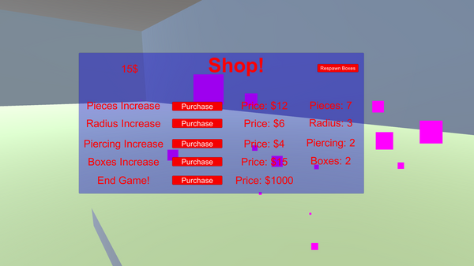
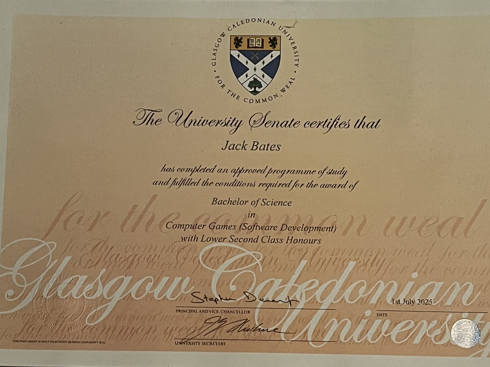

My name is Jack Bates, aspiring game and software developer.
Here you will find a collection of my work, including projects, games, and software applications that I have developed. Feel free to explore and learn more about my skills and experience.
About Me
Hi, my name is Jack.
I'm a game developer with a passion for creativity and pushing my skills. Learning more every project is what keeps me motivated to develop in projects, and seeing what I'm able to achieve is a good reward for anyone, much less sharing it with others. This is what this site is for: to show off my works!
What I'm Passionate About
Games are interesting to me, and it's no more apparent than the fact that I'm learning to develop more every day. Ever since I was young and able to actually grab things I've been playing games, and my passion always stays burning, even during harsher times.
My Goals
My goals are to become a game developer, and to work in the industry. It's been a dream of mine since I was able to think more on my career goals, though I'm not limiting myself to only that as a career goal. I'm also open to anything in general to do with front end development.
My Skills
C#
My earliest programming language I sunk time into, it's the one I know the most about. It's simple, but reliable for front end or game development without getting too far into the weeds of things like memory management. You don't have as much control, but you can get a lot done with it.
HTML
I am still learning this language, so I am hardly proficient yet, but I made this site using it and it's a well functioning one. I have a couple years of experience with it, but I haven't properly touched it for a good couple years until recently. Though it does come back to you, I'm still a little rusty.
VS Code
I have been using different versions of this program for years, whether the yearly releases or most recently the Studio Code release. It's proven very helpful in optimising the efficieny of development in cutting down of repetitive tasks.
GitHub
I have used this as long as I've been developing. It's a good platform to upload all my projects on to, and is a good place to work together with other contributors on a team project, or a public repository.
Communication
I always enjoy talking with others in and out of work. This is more of a soft skill, yes, but it is essential for team building and getting along with everyone even if you don't see eye to eye in a professional environment. You don't have to like each other, but you have to be civil.
My Projects
Puffy McPuffer's Grand Canal Adventure
This was my IP3 group project, Puffy McPuffer's Grand Canal Adventure, and my most fleshed out game thanks to having an entire year to work on it. As I was a part of the team, I can mention what I worked on in particular:
The entire racing level within it was my creation.
The movement system was mine which took a lot of refining to get a proper boat feeling.
The entire quest level was also mine, as well as the UI elements involving quests.
Vision
This was my previous group project at Uni, Vision, a game based on the concept of screen cheating in the days when split screen was the norm for multiplayer. As we were still learning, it's less fleshed out than what it could be, but the markers loved the concept of the game even if it needed a bit of work to be fully realised. I largely made:
The movement system along with the hidden players for each camera.
The attack the ghosts have to stun the hunter.
The center square for ghosts to bring what they need to win.
Other small things like audio and the like.
Graphics in C++
This was my first try at C++, as well as graphical development in the code itself, my GraPro Coursework. It's little more than a tech demo, but it does show my learning at the code base, and what could potentially come of it. This largely helped me to learn about:
Importing models from a folder in code, basic, but important.
Applying textures to different model meshes as well as effects like water.
Understanding more of C++ to a fundamental level.
Basic movement momentum and physics in C++.

Incremental Box Game
This is my portfolio piece for 2025's module submission, a proof-of-concept/demo of a game similar to A Game About Digging A Hole on Steam, which I've just called Generic Box Breaker Game. The core gameplay loop is breaking boxes to earn money, and spending that money to increase your efficiency, a classic clicker/idle game staple brought to a more interactive medium. This taught me more about:
Fracturing models. This was the core part of this project that took the most time to figure out.
Making different systems work well together to make a tight, if first drafty, gameplay loop.
Understanding particle effects a little better. I could still learn more, but they have proven to be more understandable to me.
Stat manipulation mid game.
My Achievements

My most recent achievement is graduating from university in game development. It was a great time to learn, even if it wound up being challenging at times. I learned a lot of the fundamentals which apply even here, and made many fun projects as shown above.